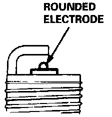

Spark Plug: Testing and Inspection
Spark Plug Inspection:

1. Inspect the spark plugs for:
^ Improper gap
^ Carbon deposits
^ Cracked center electrode insulator
^ Burned or worn electrodes (may be caused by):
- Excessive mileage
- Lean fuel mixture
- Advanced ignition timing
- Loose spark plug
- Plug heat range too high
- Insufficient Cooling
^ Fouled plug (may be caused by):
- Rich fuel mixture
- Retarded ignition timing
- Oil in combustion chamber
- Incorrect spark plug gap
- Plug heat range too low
- Excessive idling/low speed running
- Clogged air cleaner element
- Deteriorated ignition coil, coil wire or ignition wires
2. Replace the plug if the center electrode is rounded.
Spark Plug Inspection:

3. Adjust the gap with a suitable gapping tool.
Electrode Gap: 1.0-1.1 mm (0.039-0.043 in.)